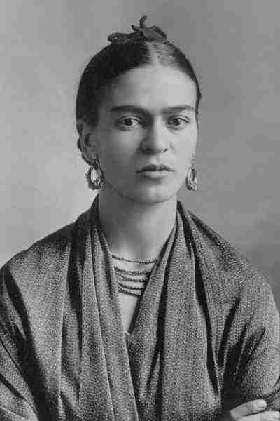
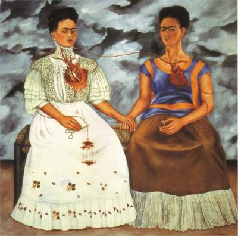

Frida Kahlo
“Man hat mir gesagt, ich sei Surrealistin, aber ich bin es nicht.
Ich habe nie Träume gemalt, sondern meine eigene Realität.”
“Wenn man das eigene Leid einmauert, riskiert man, dass es einen von Innen her auffrisst.”
‚  “Ich habe immer gedacht, dass ich die seltsamste Person auf dieser Welt bin,
aber später dachte ich, dass es viele solcher Leute auf der Welt gibt,
es muss also jemanden wie mich geben, der sich auf gleiche Weise bizarr und beschädigt fühlt, so wie ich mich fühle.
Ich stelle mir die Frau vor, und stelle mir vor, dass sie dort drüben auch an mich denkt.
Also gut, ich hoffe, wenn du dort bist und dies liest, dass du weißt, dass es wahr ist, dass ich da bin und genauso seltsam bin wie du.”
Was für Gedanken kommen euch in den Kopf?
Ohne sich hier weiter mit Frida Kahlo's Lebensgeschichte zu beschäftigen (denn davon gibt es schon genug Websiten ;) )
- was für Gedanken schießen euch nach den Zitaten und den Kunstwerken von ihr in den Kopf?
Was glaubt ihr, was sie für ein Leben gelebt hat?
Was für ein Mensch war sie? Wie würdet ihr sie beschreiben?
Denkt ihr, ihr wärt Freunde gewesen?
Was würdet ihr ihr sagen wollen, wenn ihr es könntet?
Löst das Gesehene etwas in euch aus oder könnt ihr euch nicht damit identifizieren?
Teilt gerne eure Gedanken mit...